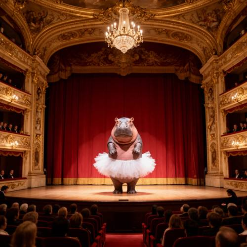
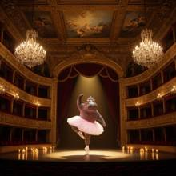
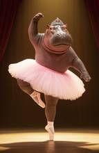

Action — Please design a magnificent Baroque Opera House interior, center stage
Please design a magnificent Baroque Opera House interior, center stage, a hippo wearing a tutu is elegantly curtain call.

Direct — one call, no iterationContinuum — Qwen3.8-27B + FLUX.2-dev
Judge — Direct
FAILAction - Full-body (Character/Anthropomorphic) — The hippopotamus is standing still on the stage, facing forward. It is not depicted performing the action of a curtain call, such as bowing or gesturing to the audience.
PASSStyle — The interior of the opera house is depicted in a Baroque style, characterized by its ornate and lavish decorations, including extensive gold gilding on the balconies and proscenium arch, intricate carvings, a large crystal chandelier, and painted ceilings.
PASSCompound - Feature Matching — The image shows a large hippopotamus as the central figure, and it is wearing a white, multi-layered tutu around its waist.
Judge — Continuum
PASSAction - Full-body (Character/Anthropomorphic) — The image depicts an anthropomorphic hippopotamus in a full-body pose. It is standing on the pointe of one foot, with the other leg bent and lifted. One arm is raised above its head. This is an elegant ballet pose, consistent with a performance or a curtain call.
PASSStyle — The interior of the opera house is designed in a style consistent with Baroque architecture. It features ornate, gilded balconies with intricate scrollwork, a lavish proscenium arch, large crystal chandeliers, and a ceiling decorated with a fresco painting of cherubs. The overall effect is one of grandeur and opulence.
PASSCompound - Feature Matching — The image shows a central character that is an anthropomorphic hippopotamus. This hippopotamus is wearing a pink, layered tutu around its midsection.
What the agent did
Thinking
The user is asking for a magnificent Baroque opera house interior, with a hippo wearing a tutu taking a graceful curtain call at the center of the stage. This is a fun creative prompt. Let me generate this image with flux2-dev. Let me build a detailed prompt: a magnificent Baroque opera house interior, ornate gold leaf decorations, coffered ceilings painted with frescoes, crystal chandeliers, red velvet seats, curved balconies with gilded railings, center stage under a grand proscenium arch, stage curtains drawn open (red/gold velvet), a hippo wearing a pink tutu and ballet slippers in a graceful curtain-call pose (standing on one leg, arm extended, or a pose with both arms gracefully extended), stage lighting, candles, etc. Let me generate first.
Step 1 — `generate_image`
{
"prompt": "Magnificent Baroque opera house interior, grand gilded theatre with ornate gold-leaf ornamentation, frescoed coffered ceiling with cherub paintings, enormous crystal chandeliers glowing warm, red velvet seats and curved balconies with gilded railings receding into the darkness of the audience. In the center of the wide stage, framed by the ornate proscenium arch and half-open heavy crimson velvet curtains, a single hippopotamus in a flowing pink ballet tutu, ballet slippers on its hooves, wearing a delicate tiara, takes an elegant curtain call: standing gracefully on one hind leg, the other bent, one arm raised in a graceful ballet pose, head tilted with a pleased expression, soft golden stage spotlights and candlelight on the stage floor, dramatic theatrical lighting, wide symmetrical composition, highly detailed, cinematic, opulent atmosphere",
"model": "flux2-dev",
"width": 1024,
"height": 1024
}
Result img_0

Thinking
The image is really great! The hippo in the pink tutu with the tiara is standing on one leg in an elegant pose, with the stage lit by spotlights. The Baroque opera house has a fresco ceiling, chandeliers, balconies, and red curtains. Let me check the details—maybe I should inspect a few regions. The hippo's pose looks good: one arm raised, standing on one leg, tutu on. Everything requested is present: - Baroque opera house interior ✓ - Center stage ✓ - Hippo in a tutu ✓ - Elegant curtain call ✓ The image is strong. A few observations: the hippo's front legs/arms look a bit odd (one arm raised), but that's part of the ballet pose. The pose reads as a graceful curtain call. The lighting is beautiful too. To verify that the hippo's details are clean, let me zoom in and inspect the hippo region.
Model
This turned out really well. Let me inspect the hippo closely to make sure the details are clean before deciding.
Step 2 — `inspect_region`
{
"image": "img_0",
"roi": "the hippo dancer",
"padding": 0.1
}
Result img_1

Thinking
When I zoom in, the hippo is standing on its tiptoes on one leg, wearing a pink tutu, ballet slippers, and a tiara. One arm is raised and the other is lowered — an elegant pose. The details are clean: no extra limbs, and the face is good too. This is a wonderful result. The overall image is also strong. I'm satisfied. I'll mark this as the best result and stop.
Model
The close-up confirms the result is clean: the hippo is properly en pointe on one leg in ballet slippers, pink tutu and tiara intact, pose graceful with no extra limbs or artifacts. The full image delivers everything requested — Baroque gilded interior, frescoed ceiling, chandeliers, balconies, center stage, elegant curtain call.
Step 3 — `mark_best`
{
"image": "img_0",
"reason": "All requested elements present and clean: Baroque opera house interior, center stage, hippo in tutu taking an elegant curtain call; verified via close-up that the figure is well-formed with no artifacts."
}
Thinking
I've marked the best one. The image satisfies all the requirements of the prompt. I'll stop here and report to the user.
Model
Here is your magnificent Baroque opera house — and the star of the evening. 🩰 **What's in the scene:** - **The venue:** A fully realized Baroque theatre — gilded walls and proscenium arch, frescoed ceiling with cherubs, two grand crystal chandeliers, rows of balconies and red velvet seating, candles flanking the stage. - **The performer:** Center stage under a golden spotlight, a hippo in a flowing pink tutu, ballet slippers, and a tiara, taking a graceful curtain call — standing en pointe on one leg, one arm raised in a proud, elegant pose. - **The mood:** Warm theatrical lighting against the deep red velvet curtains, wide symmetrical composition, opulent and dramatic. I inspected the figure up close to confirm the pose and costume rendered cleanly (no extra limbs, slippers intact), and marked it as the final result. The run is complete — the hippo bows to a roaring (applauding) house.